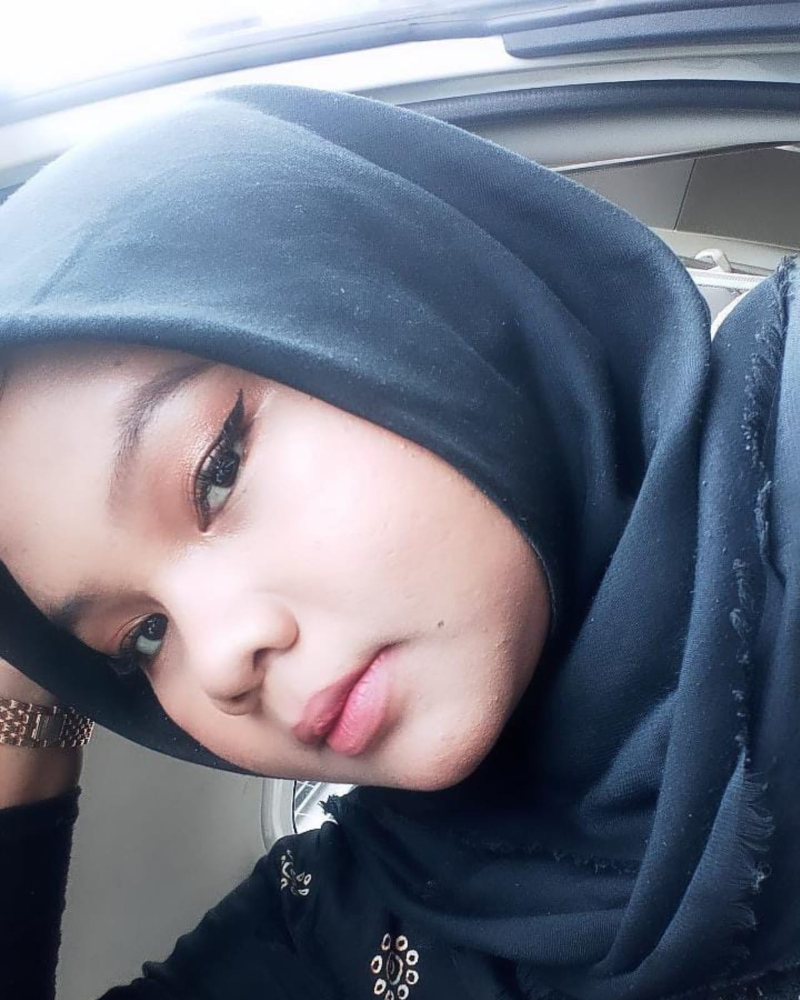
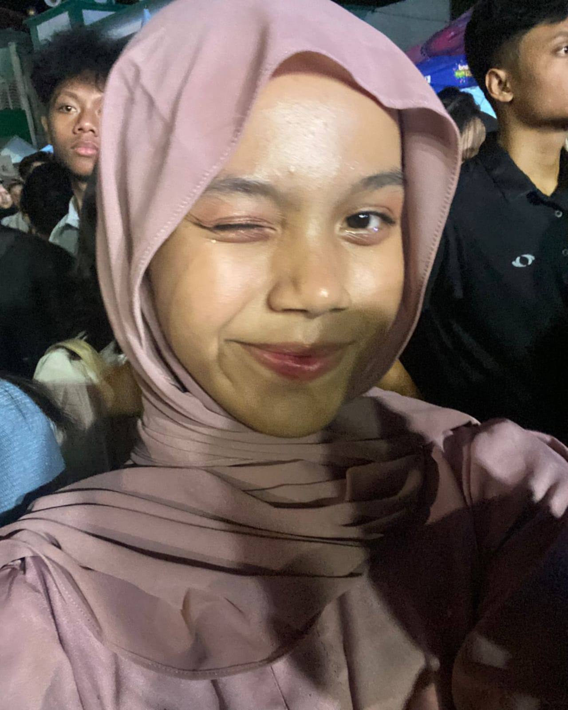
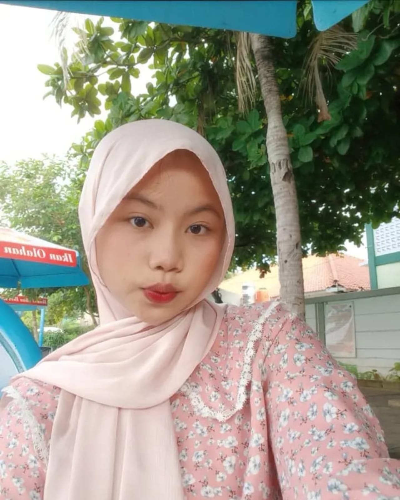
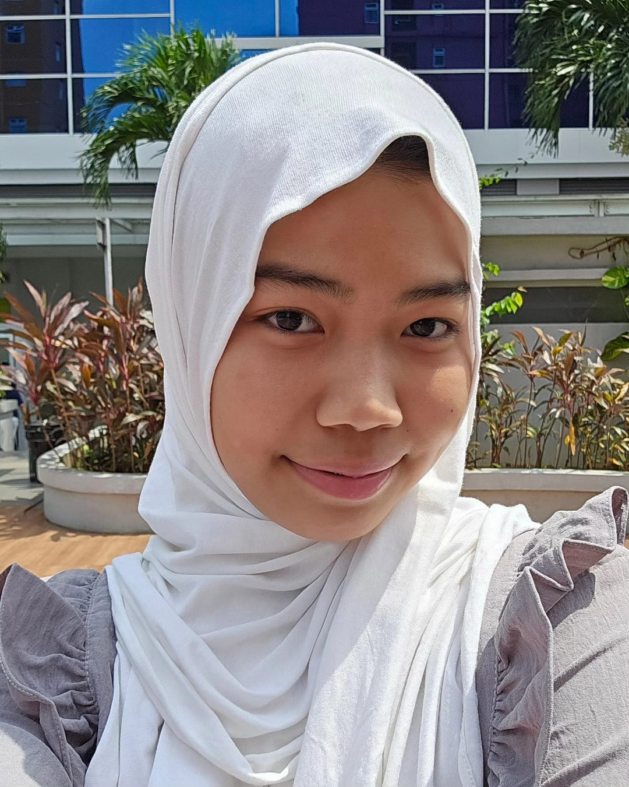

Halo semua! Perkenalkan kami merupakan kelompok dalam bidang informatika dari kelas XG SMAN 71 Jakarta. Nama Ceilura sendiri, diambil dari inisial masing masing anggota kami. Yaitu, Cantika, Keisha, Luna, dan Flora. Dan kata green sendiri adalah pelengkap dari nama grup kami yang berkaitan dengan zero waste living.
Dan logo kami, yang terlihat minimalis namun dengan paduan warna yang satu, mengartikan bahwa kita yang hidup bersama, beserta mahluk hidup lainnya haruslah menjaga bumi. Sekecil apapun itu usahanya. Menjaga bumi untuk tetap hijau dan lestari merupakan kewajiban kita semua sebagai mahluk hidup yang berakal.
Dengan terciptanya nama grup ceiluragreen, diharapkan nama kami dapat mudah diingat oleh para pengunjung dan selamat datang di web kami!
|  |
Meiluna Hamim as a Game ProgrammerJobdesk dari seorang game programmer adalah melakukan penelitian tentang tren terbaru dalam industri game untuk diterapkan dalam pengembangan game yang kami buat lalu ia akan meningkatkan performa game agar game dapat berjalan dengan lancar di berbagai perangkat yang dipakai oleh orang yang ingin bermain game kami |
|---|---|
|  |
Flora Juwita Audya as a Website DeveloperJobdesk dari seorang website developer adalah mengoptimalkan kecepatan dan kinerja web dengan mengelola ukuran file, caching, dan teknik optimasi lainnya, lalu ia juga akan memastikan bahwa situs web memuat dengan cepat dan responsif di berbagai perangkat agar para pelihat dapat melihat dan memainkan product dari web yang kami buat |
|  |
Keisha Amelia Putri as a Content WriterJobdesk dari seorang content writer adalalah memastikan bahwa konten sesuai dengan kesepakatan anggota tim lalu ia akan membuat isi konten di websitenya |
|  |
Cantika Najah as a Graphic DesignerAs a Graphic Designer Jobdesk graphic design adalah mengembangkan desain yang tidak hanya menarik secara visual tetapi juga mudah digunakan dan intuitif untuk para pelihat web, selain itu ia jugamendesain halaman web yang responsif sehingga tampilan tetap optimal pada berbagai perangkat. |